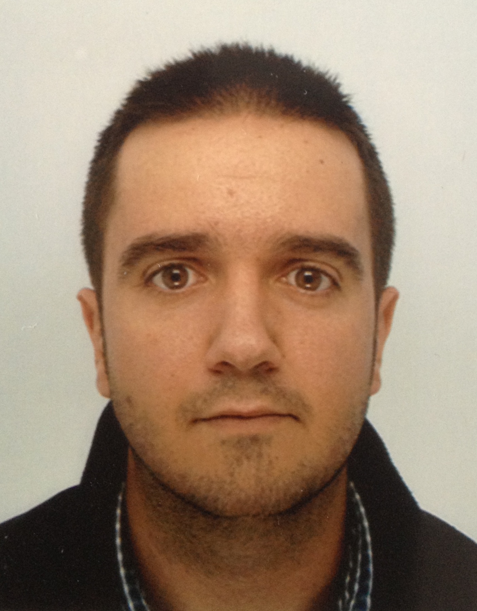

Alberto Cuadrado

From: Spain
Qualifications:
Hygiene and Safety Master. University of Las Palmas de Gran Canaria, 2009
Industrial Engineering Degree (1st Class Honours).University of Las Palmas de Gran Canaria, 2007
Project:
'Analysis of Internal Fixation Systems Based on Screws and Plates for Osteoporotic Fracture Healing Using In-vitro Tests and Computational Models'
The aim of this study is to develop computational models which simulate the in-vitro tests carried out in the laboratory. These models could allow us to modify some parameters of the study reducing the number of in-vitro tests needed to be carried out in the future.
Supervisors: Dr. Pankaj Pankaj
Research Interests:
Finite Element modelling
In-vivo and in-vitro testing
Implant Design
Previous Projects:
'Biomechanic study of a new system to improve cortical screw fixation on osteoporotic bones' - (Final degree project - University of Las Palmas de Gran Canaria, 2007)
Contact: alberto.cuadrado(at)hotmail.com